LoRA 算法论文解读 & 开发人员如何微调大模型并暴露可调用接口¶
来源：哔哩哔哩 BV1R6P7eVEtd，第 1 集，全片 00:00—69:14。本文是按原顺序整理的忠实讲稿，清理口头停顿并校正有画面或上下文依据的识别错误。原始 ASR 和时间戳随文保留。截图来自 554×360 源视频，小字清晰度受源分辨率限制。
从微调模型到后端调用¶
Hello，小伙伴们大家好，我又来更新了。本期视频主要讲：作为一个卑微的开发，如何微调、部署一个大模型，最终暴露接口给你的后端系统调用。因此，我们默认大家有一定的计算机基础，掌握基本的 Linux 命令。
本期主要分为五个部分。首先还是从需求角度出发，介绍企业对大模型可能有哪些不同类型的个性化需求，以及实现这些需求必须了解哪些技术，包括有监督微调、强化学习，还有 RAG 检索增强生成。有监督微调就是今天重点实现的内容。这三种技术，对于普通企业接入大模型来说，应该已经比较全面。我们会先讲概念和基本原理，目的是帮助大家根据自己的需求选择技术：微调和 RAG 是都做，还是只做一个？资源有限时优先做哪一个？
然后详细讲今天要实现的有监督微调：先介绍微调算法的分类，重点讲 LoRA 微调算法的原理，再介绍当前比较热门的微调实现框架。第二部分是整体实现步骤的说明。我单独分了一节，因为我个人比较喜欢在动手之前，把每一步完全搞清楚。稍后会带大家完整走一遍，在 Linux 系统上微调大模型、部署模型、暴露 API 给 Web 后端调用的全过程。不过 Web 应用没有部署到服务器上，是在我电脑本地启动的。接下来的三、四、五节都是动手实践。
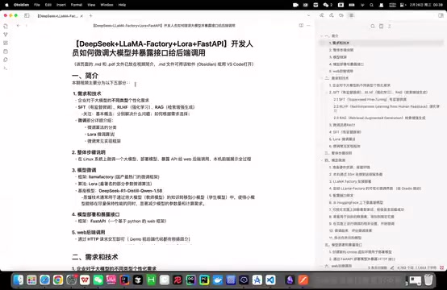
课程文档列出需求技术、微调、部署接口与 Web 调用的整体安排 · 原片 00:24
模型微调用 LLaMA-Factory，因为它是目前国产很热门的微调框架。算法用 LoRA，因为大多数情况下，我们不太需要做全参数微调，也就是把整个模型所有参数彻底改变，那样成本很高。LoRA 是一种著名的部分参数微调算法，可以显著降低资源消耗，同时取得非常不错的性能。
基座模型选择 DeepSeek 的 1.5B 蒸馏版本。选择 1.5B 仅仅因为训练很快，便于演示，实际使用时你可以自己更换，我觉得它还是不太聪明。什么是蒸馏？这里的意思是，通过蒸馏技术，把 DeepSeek 模型的知识转移到较小的 Qwen 1.5B 模型上，得到更轻量、更高效的模型。它比满血 DeepSeek 小得多，但因为吸收了它的知识，还保留着不错的性能。
下一步是模型部署和暴露接口。这里用 FastAPI，它是基于 Python 的 Web 框架，可以把模型作为服务启动，暴露你自定义的 API 接口，其他应用就能通过 HTTP 请求与它交互。最后 Web 后端调用，直接在代码中发起 HTTP 请求就可以了。
为了展示，我搭了一个 Vue 3 前端、Spring Boot 后端的简单对话页面，代码地址放在视频简介。大家不用太仔细看代码，这个 Code Review 有点恐怖，会尴尬。好了，现在正式开始。首先，企业对于大模型，可能有哪些不同类型的个性化需求？我们可以从四个案例理解。
企业需求与 SFT、RLHF、RAG¶
有时我们希望提高模型对企业专有信息的理解。比如，希望大模型更好理解蟹堡王的私有知识：蟹老板的女儿为什么是一头金鱼？有时希望增强特定垂直行业领域的知识，比如特别精通汉堡制作，熟练回答汉堡行业所有问题。通用预训练模型要兼顾各个方面，肯定没办法做得这么好，尤其你的行业特别小众时。
有时希望它提供更个性化、互动性更强的服务，能够基于顾客反馈调整回答方式，是生成更二次元的回答，还是更学术的回答，这就涉及强化学习。第四种情况，希望它实时获取最新信息、在线信息，比如蟹堡王最新的促销活动。你不能每天微调一遍，对吧？这就需要 RAG 检索增强生成。提高企业专有信息理解、增强行业知识，看上去微调和 RAG 都能做，具体怎么选，后面详细讲。
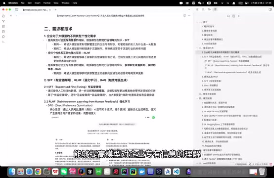
企业个性化需求与 SFT、RLHF、RAG 的说明页面 · 原片 04:12
有监督微调，Supervised Fine-Tuning，就是提供人工标注好的、有标签的数据，进一步训练一个别人已经训练好的预训练模型。预训练模型也就是网上下载的开源基座模型。这样可以让模型更精准处理特定行业领域的任务。当然，有监督微调之外，还有无监督微调等，但大家一般提“微调”，指的都是有监督微调，因为实际应用中最常见。
接着是 RLHF，Reinforcement Learning from Human Feedback。这里主要讲 DPO 和 PPO。第一个是 DPO，Direct Preference Optimization。核心思想是直接通过人类的对比选择，优化模型生成，使它直接产生更符合用户需求的结果。它的调整幅度一般比较大，有时你点完，下一个问题可能就根据你的反馈调整。比如随便问一个问题——不好意思，我最近问的只有这个给了两个回复——这里就是 DPO 的一种体现：给你两个不同回复，最后让你选更喜欢哪个。
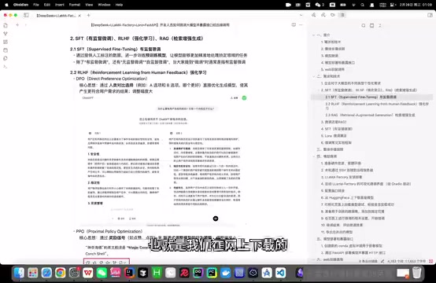
RLHF 文档中的双回答对比与 PPO 说明 · 原片 06:00
PPO 是 Proximal Policy Optimization，近端策略优化。名字也很明显，核心思想是通过奖励信号，渐进调整模型的策略行为。比起直接通过对比选择调整，它的调整幅度相对小得多，希望比较温和、稳健地调整模型生成结果。比如给模型点赞、点踩，就是对它进行 Proximal Policy Optimization。
什么是 RAG 检索增强生成？上期视频讲得比较详细。它把外部信息检索和文本生成结合起来，帮助模型生成答案时，实时获取外部数据库的信息，以及最新信息等。
简而言之，微调是把知识喂给模型，模型消化吸收后，知识变成参数的一部分。强化学习是模型根据人类反馈调整生成结果，生成更个性化的回答。检索增强生成也是最近很火的领域，相当于给模型开外挂，每次回答问题都先翻资料，再生成回答。
微调与 RAG 怎么选择¶
又回到刚才的问题：微调还是 RAG？一般来说，大多数企业想训练自己的大模型，最核心的需求就是让它具备企业私有、内部不能公开的知识。
微调适合的场景，首先一定要有比较充足的私有数据。比如想训练企业自己的 AI Coding 大模型，让它解答代码报错问题，至少要准备上千条报错信息，以及对应解决方式的标准化数据。喜欢洗数据的朋友们有福了。如果数据量很小，微调效果要么不明显，要么容易过拟合。它明显的好处是，直接提升模型固有能力，不依赖外部检索，一般速度更快，回答质量也更稳定。
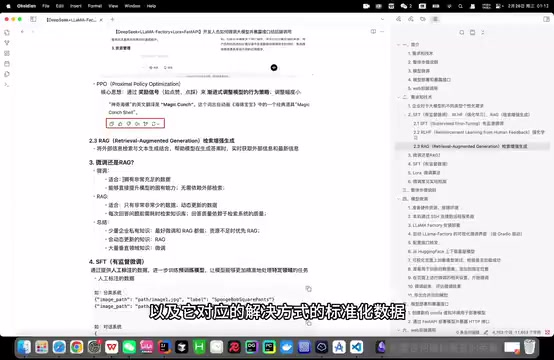
微调与 RAG 场景选择的文档段落 · 原片 09:12
RAG 比较适合数据量非常少的情况。比如把企业某个设备的操作手册放进去，手册有时几千页，是非常复杂的机器。下次客户来问，让他问 AI 就行。它还适合数据一直动态更新的情况：不能更新一次就微调一次大模型，不太可行，这样只需要维护知识库。
但 RAG 的缺点是每次回答都先检索，比较耗时，而且非常依赖检索系统质量，检索结果不总是精准。实现框架很多，比如上期讲的 RAGFlow，同样可以直接暴露 API 给后端调用。
所以怎么选？根据我上学期期末作业的结果，如果想让模型拥有少量企业内部私有知识，最好微调和 RAG 同时做，效果最好：两者同时做，优于只做 RAG，优于只做微调，优于什么都不做。资源不足时，可以优先做 RAG。如果涉及不断动态更新的知识，比如蟹堡王每周都换的菜单，还是要用 RAG 打一个链路。如果想让模型获得大量垂直领域知识，比如训练医学领域模型，你不能把几十本、上百本书，都让它每次回答去检索，不要太为难大模型，这就用微调实现。
今天实现的是有监督微调，所以重点讲微调。刚才说，它通过人工标注的数据，进一步训练预训练模型，使其更精准处理特定领域任务。那么什么是人工标注数据？比如要训练一个分类系统，传进去的数据可能是这样的。
一张图片，它的标签是海绵宝宝；第二张图片，标签是派大星。也就是人工给数据打标签。对话系统类似，比如传一个指令：“请问你是谁？”数据集就一定要包括这个问题的回答，模型才知道下一次面对这个问题，应该生成什么。这就是人工标注数据的意思。
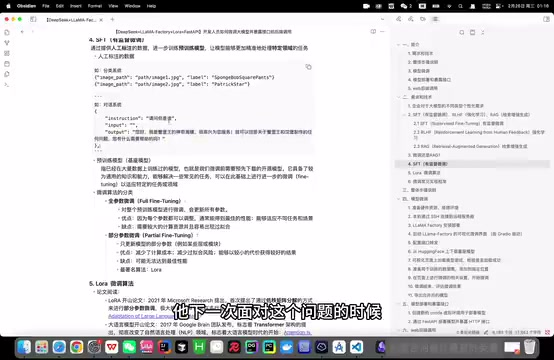
人工标注样例与全参数、部分参数微调分类 · 原片 12:24
预训练模型，是已经在大量数据上训练好的模型，也就是微调前预先下载的、企业开源的模型。它一般已经具备通用知识和能力，但我们需要让它在此基础上适应特定任务或领域。
全参数微调与部分参数微调¶
微调算法大概分为全参数微调和部分参数微调。全参数微调，顾名思义，对整个预训练模型所有参数进行调整，每个参数都会更新。因为所有参数都能调，一般能给出最佳性能，模型可以适应不同任务和场景。缺点也明显：需要较大计算资源，GPU 容易受 I/O 瓶颈限制，也容易过拟合。
部分参数微调，只更新一小部分参数，比如某些层或模块。优点是显著减少计算成本，以较小代价获得不错效果；对应的缺点是可能达不到最佳性能。最著名的部分参数微调算法可能就是 LoRA——这里大小写我要改一下。
进入 LoRA 论文¶
接下来详细介绍今天用的 LoRA。它是 2021 年由——谷歌研究，微软研究团队提出的算法。历史很短，不过整个大语言模型研究历史都很短。它首次提出通过低秩矩阵分解进行部分参数微调，使大语言模型微调突破资源限制，极大推动 AI 大语言模型在很多行业广泛落地应用。
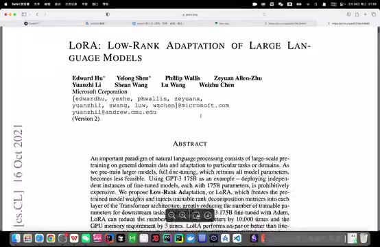
LoRA 原论文首页与标题 · 原片 14:36
我们直接进论文看，大家不用害怕看论文。我觉得很多时候，一篇优秀论文整个行文组织的逻辑，比很多二次拆解博客好得多。先看摘要，看看它到底做什么。
它说，大语言模型应用的一个重要范例，是对 general domain data，通用领域数据，进行 large-scale pre-training，大规模预训练，再 adaptation to particular tasks，适应特定任务。也就是先预训练能够处理通用任务的大模型，再微调，使它适应特定领域。
As we pre-train larger models，当预训练模型越来越大，full fine-tuning，全量微调，就变得 less feasible，不太可行。为什么？以 GPT-3 为例，它有 175B 参数，B 是 billion，十亿，也就是 1750 亿参数。去微调的代价非常高昂。所以提出 Low-Rank Adaptation，也就是 LoRA，中文是低秩自适应，等一下详细讲。它是什么思想？
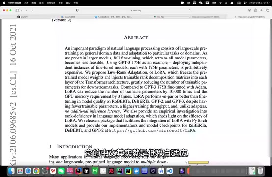
LoRA 论文摘要中的权重冻结与低秩适配说明 · 原片 16:00
“Which freezes the pre-trained model weights”，它冻结预训练模型权重。冻结就是 LoRA 不对预训练模型的整个参数做任何修改。又怎么做到微调？原始参数不动，在旁边附加一个结构，把可训练的秩分解矩阵注入 Transformer 架构每一层，大大减少下游任务训练所需参数。等一下看它整个结构。
论文第一部分是整体介绍。从这里看第二部分，先抛出问题：假设给定一个预训练基座模型，需要让它适配下游任务，适应特定任务，那么需要全参数微调。接着提出全参数微调的挑战。第三节正如标题：“Aren't Existing Solutions Good Enough?” 现有方案还不够好吗？当然不够好。不够好，就要提出 Our Method，我们自己的方法。所以这里提出低秩参数化更新矩阵。
秩、权重变化量与低秩分解¶
这一段是什么意思？这是它最核心的表达式。我们回文档看，字太小了，去 PPT 吧。
先弄清概念：什么是矩阵的秩？如果大家还记得线性代数，它是矩阵中线性无关的行或列的最大数量。感性理解，反映矩阵包含的有效信息量。
表达式是：
h = W₀x + ΔWx = W₀x + BAx
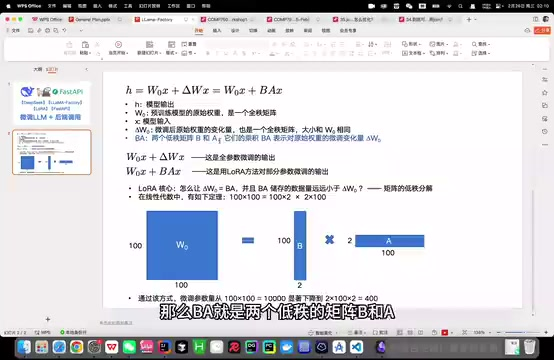
PPT 展示 h=W₀x+ΔWx=W₀x+BAx 及低秩矩阵尺寸 · 原片 19:00
h 是模型输出，x 是模型输入。前半部分是全参数微调输出表达式，后半部分是 LoRA 方法微调输出表达式。W₀ 是预训练模型的原始权重，是非常大的满秩矩阵。ΔW 是微调后权重矩阵的变化量，也是全秩矩阵，大小与原始权重矩阵完全相同。BA 是两个低秩矩阵 B 和 A，它们的乘积表示这个权重的变化量。
LoRA 核心就是，怎么让 BA 表示微调后权重变化量 ΔW，同时让 BA 存储的数据远小于巨大的全秩矩阵？这涉及矩阵低秩分解。线性代数里，矩阵乘法有这样的原理：100×2 的矩阵，乘以 2×100 的矩阵，最后得到 100×100 矩阵。
看这幅图，100×100 矩阵，你可以想象它是 W₀，预训练模型原始权重矩阵非常大；100×2 是 B，2×100 是 A。两个乘起来，能表示一个 100×100 矩阵，但存储参数数量少得多。
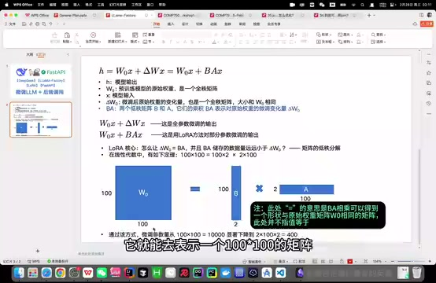
100×100 与 100×2、2×100 的尺寸示意；图中注明不表示数值相等 · 原片 20:00
图中后加的注释说明：“＝”表示 BA 相乘可得到一个与原始权重矩阵 W₀ 大小相同的矩阵，此处并不指值相等。
通过这种方式，参数量从 100×100＝10000，显著下降到两个 2×100，也就是 400。这就是 LoRA 核心设计思想。
回论文看，这幅图表达的也是这个意思：冻结 pretrained weights，原始权重矩阵不修改，训练过程中不动它；旁边增加一条旁路，加入 A、B 两个低秩矩阵。整个微调训练过程中，只更新 A、B 的参数，最后训练得到的结果也就是这两个低秩矩阵。
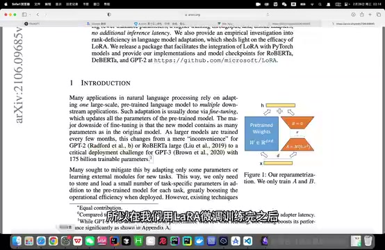
论文示意图：冻结原始权重并训练旁路 A、B · 原片 21:00
所以 LoRA 微调训练完，还有权重合并这一步。我们得到 A、B，没有改动 pretrained weights，需要把最终结果合并到预训练模型权重，大模型才能直接用它的权重矩阵做正向计算，得到输出。
为什么合并后不增加推理延迟¶
继续往后看，这就是整个 LoRA 核心思想。下面一段还是讲相对全量微调的优势，比较有意思：有优势的基础上，LoRA 不造成额外推理延迟，No Additional Inference Latency。
你引入了新方法，引入两个低秩矩阵，模型计算会不会有额外负担？当然不会，因为可以把 BA 叠加到原始权重矩阵 W₀ 上，得到新的 W，也就是微调后全新的权重矩阵。直接拿它做正向计算，过程和模型原来的计算过程一模一样，只是参数值变化，当然不会增加推理延迟。
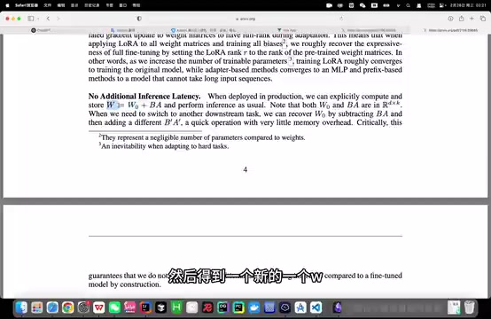
论文 No Additional Inference Latency 段落 · 原片 22:12
后面一句是，如果多次微调，让模型适应很多不同任务场景，比如医学、法律等，每次在特定场景使用，只需要更新 BA，相当于提供一种轻量的切换方式。
4.2 讲把 LoRA 应用到 Transformer 架构。前面讲思想和结构，这里要注意：这项研究中，LoRA 仅针对自注意力模块权重微调。Transformer 架构是什么？文档里能找到非常著名的论文《Attention Is All You Need》，可以看一下。它是整个大语言模型的开山论文，彻底改变自然语言处理领域，标志着大语言模型时代开始，由 Google Brain 团队发布。后面是对比实验，用来证明 LoRA 确实比其他解决方案更优越。
微调实现框架¶
接着看微调常见实现框架。大家可以看这篇文章，我觉得总结得还可以，也讲到了今天用的 LLaMA-Factory。
它支持多种主流大语言模型，也支持多种训练方式，比如预训练、今天要做的指令监督微调，以及 PPO、DPO 等，还支持很多先进算法。功能全面、强大，使用也简单。它是国内北航开源的低代码大模型训练框架，等一下你会发现可以直接零代码微调，很好学，一般从它入门就行。
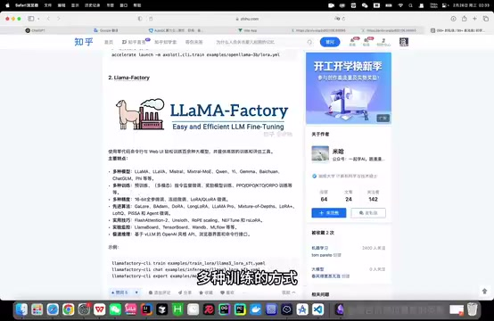
文章介绍 LLaMA-Factory 的功能与训练方式 · 原片 24:12
Transformers Trainer 是 Hugging Face 提供的高层 API，同样适合各种大语言模型任务微调，提供标准化流程和多种监控工具，更适合需要更多定制的场景，尤其在部署和生产环境表现出色。
DeepSpeed，如果做企业应用，一般不怎么接触。它适合大规模模型训练和分布式训练，也就是比较适合大模型预训练。企业一般不自己做预训练，而是用别人训练好的模型微调，所以用得少一些。
先走通整个实现步骤¶
接下来讲整个过程，包括微调、部署、暴露接口和 Web 后端调用。
模型微调，首先准备硬件资源、搭建环境。我只有一台 Mac，所以选择在云平台 AutoDL 租实例。接着通过 SSH 远程连接租用的服务器，我用 Visual Studio Code 的 Remote 插件。然后在服务器安装、部署 LLaMA-Factory，安装后启动可视化微调界面，刚才说了，可以零代码微调。
接着配置端口转发，因为界面启动在服务器，本地浏览器肯定访问不到。但如果你也用 AutoDL，大概率不用做这步，平台可能自动配好了。反正我一启动就配好了，研究半天没发现为什么；有的其他云平台好像还要自己配，讲完我再研究一下。
然后从 Hugging Face 下载今天微调的基座模型，DeepSeek 1.5B 蒸馏版本。下载后，在已打开的可视化页面加载模型，测试是否加载成功。如果能正常对话、确定加载没问题，才开始真正微调。
先准备一份训练数据集，放到指定位置，再在页面做微调设置，重要的是参数。可以在页面或终端启动训练。训练结束评估效果，不满意就再调；满意就导出最终合并模型。为什么要合并？刚讲过，LoRA 最后训练得到两个低秩矩阵，并非整个原始权重矩阵的微调结果，所以最后要把它们合起来。
模型部署、暴露接口，首先创建新的 Conda 环境，与 LLaMA-Factory 的环境隔离，避免相互干扰。用 FastAPI 写一段代码部署模型，暴露一个 generate 接口，再把应用启动。这里可能也要配置端口转发。成功后，浏览器输入这个 URL，看服务是否成功启动，或者用 Postman 测试 FastAPI 部署的模型应用。
Web 后端调用简单很多，直接导一个包，发 HTTP 请求即可。等一下会在前后端 Demo 里看最终效果。
租用服务器并通过 SSH 连接¶
现在正式开始模型微调，太好了，时间还早。我打算从头到尾重新实现，中间有报错，大家等我处理。
首先准备硬件、搭建环境，到 AutoDL 租实例。4090 跑得快些，有空闲卡就能租。镜像我习惯选 Python 3.10，但后面可以换，也能自己创建新环境。现在等它开机。
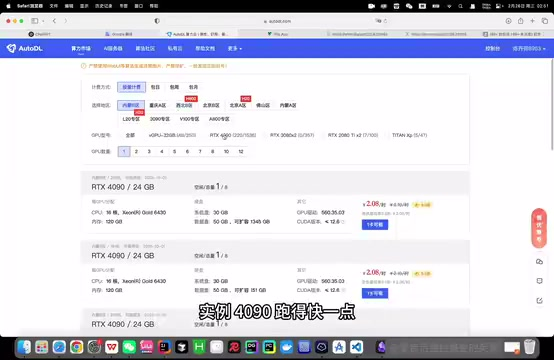
AutoDL 租用页中的 RTX 4090 实例选项 · 原片 29:36
开机后，复制 SSH 登录指令，到 Visual Studio Code 安装 Remote 插件。安装后点 SSH 新增，把指令复制进来，可以加进用户配置文件。现在直接登录，点 Continue，再把密码复制进来。
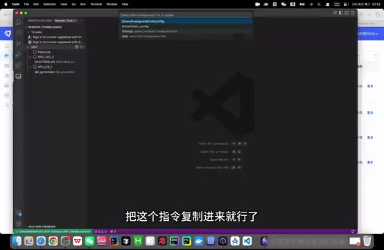
VS Code 的 SSH 配置文件选择界面 · 原片 30:16
打开终端，它会告诉你整个目录下都是系统盘，实例关机后数据不会丢失。AutoDL 这个目录是数据盘。建议所有数据都存数据盘，所以干脆直接 Open Folder 打开数据盘，等下不用再跳进来。现在已经进入数据盘。
安装 LLaMA-Factory¶
接下来安装部署 LLaMA-Factory。这里有 GitHub 地址，没关系，直接 git clone。画面中的命令是：
git clone --depth 1 https://github.com/hiyouga/LLaMA-Factory.git
cd LLaMA-Factory
可能要一点时间——这么快吗？好吧。下一步切换到项目目录 LLaMA-Factory。
进目录后，修改配置，把 Conda 环境安装到数据盘。这步可做可不做，但强烈建议做。为什么？如果这台实例后面 GPU 资源不足，你想租其他实例，可以把整个数据盘的所有东西克隆过去，系统盘就不太行。而且数据盘可以扩容，系统盘不可以扩容，所以建议做这步。
画面中把缓存与环境目录放到数据盘：
mkdir -p /root/autodl-tmp/conda/pkgs
conda config --add pkgs_dirs /root/autodl-tmp/conda/pkgs
mkdir -p /root/autodl-tmp/conda/envs
conda config --add envs_dirs /root/autodl-tmp/conda/envs
接下来创建 Conda 虚拟环境。不知道大家是否了解，总之，深度学习的环境管理非常重要，不同项目的 Python、PyTorch 版本可能不一样，不可能每启动一个项目就卸载重装。因此用虚拟环境隔离各项目对应依赖。
创建一个叫 llama-factory 的虚拟环境，Python 3.10。GitHub 页面有兼容版本说明。在哪里？在这里。版本装太高会报错，我一开始装了 3.13，后面启动 Web 页面不停报错。现在正在装环境，需要一点时间，输入 Yes。
conda create -n llama-factory python=3.10
conda activate llama-factory
安装完成就可以激活。激活前，也可以通过 Conda 的环境列表命令，看一共有哪些虚拟环境。这里表示 llama-factory 已经成功装好，而且是在数据盘。现在激活——这怎么回事？好吧，那执行 conda init，再初始化 Shell 配置，重新加载配置。好，现在这个命令能成功执行，继续下一步。
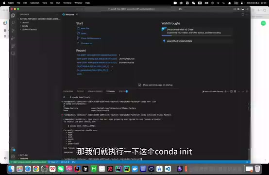
终端中的 conda init 与 Shell 初始化输出 · 原片 34:00
在虚拟环境安装 LLaMA-Factory 相关依赖：
pip install -e ".[torch,metrics]"
画面文档补充：若提示 bash: pip: command not found，先执行 conda install pip。好了，终于装完，下一步输入 llamafactory-cli version，看安装是否成功。一切正常的话……现在安装成功了。然后运行 llamafactory-cli webui，启动可视化微调页面，可能需要一点时间。页面已经启动，这次不需要配置端口转发。
这一处全片 ASR 在 34:14—34:40 出现多轮机械重复；已定向重转写 33:48—35:33，恢复“安装依赖→检查版本→启动界面”的顺序。保留原始 ASR 与恢复记录；恢复片段末尾静音幻觉未用于讲稿。
从 Hugging Face 下载基座模型¶
接着从 Hugging Face 下载基座模型。Hugging Face 是集中管理、共享预训练模型的平台，可以说是 AI 开源社区的顶流，能找到很多开源大语言模型。下载模型有多种方式，大家可以参考这篇文章。这里采用 Hugging Face 提供的官方下载工具。
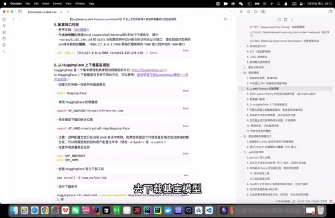
Hugging Face 下载配置与命令文档 · 原片 35:36
首先创建文件夹，用来存后续下载好的所有基座模型。
这样便于管理。开一个新终端，先再切换到 llama-factory，它现在默认又是 base 环境。创建 Hugging-Face 目录——我被 LLaMA-Factory 带偏了，本来想小写，就这样吧。
修改 Hugging Face 下载模型的镜像源，以及模型下载的默认位置，把默认位置改到 Hugging-Face 文件夹。注意，这种配置方式只对当前会话有效。如果希望环境变量每次启动都生效，可以加入配置文件，我这里先不加。
画面中的配置是：
export HF_ENDPOINT=https://hf-mirror.com
export HF_HOME=/root/autodl-tmp/Hugging-Face
接着执行查看环境变量的命令，确认配置生效。好，没问题了，安装 Hugging Face 官方下载工具。
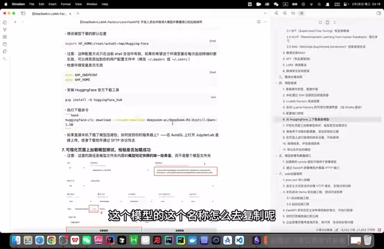
下载命令及模型路径配置的文档说明 · 原片 37:36
pip install -U huggingface_hub
huggingface-cli download --resume-download deepseek-ai/DeepSeek-R1-Distill-Qwen-1.5B
安装后直接执行下载命令。模型名称怎么复制？在 Hugging Face 搜索，再复制完整模型名称。把这一行命令复制进来，开始下载。配置镜像后速度很快，现在已经下好了。在 Hugging-Face 文件夹，它自动创建的 hub 文件夹下面，可以找到下载的 DeepSeek-R1-Distill-Qwen-1.5B 模型目录。
全片 ASR 在创建目录与模型下载完成处有机械重复；已定向重转写 36:05—38:54，恢复 hub 目录等内容。原始文本和恢复记录均保留。
下一步在页面加载模型，和它聊天，看看模型是否正常。来到页面——不好意思，我刚动了一下——把语言改为中文。在模型名称这里搜索 DeepSeek，选中对应模型。模型路径回到刚才目录复制。注意，复制的是模型文件夹内部、模型特定快照的唯一哈希值所对应的路径，而不是整个模型文件夹路径。在 snapshots 这里，直接 Copy Path，粘贴进来。
这里有四个模块：Train 训练，Evaluate & Predict 评估预测，Chat 对话聊天，Export 导出。选 Chat，点加载模型。不好意思，我刚加载了一次，反正点加载模型，显示“模型已加载，可以开始聊天了”。输入“你好”，如果回复没问题，就说明整个下载、加载都成功了。
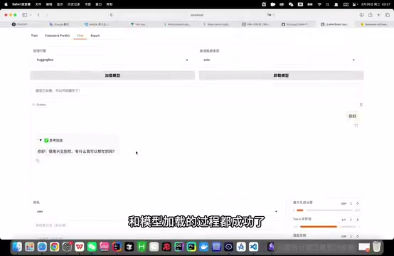
LLaMA-Factory Chat 中已加载模型并返回问候 · 原片 39:48
先记住这段话，看看微调后它的回复是不是还这样。模型加载成功后，准备数据集，进行微调训练。首先找 LLaMA-Factory 下面的文档，它详细介绍如何配置、描述自定义数据集。在 LLaMA-Factory 的 data 目录，找中文 README。自己添加数据集，可以参考这里配置，它定义了数据集格式、描述方式等。
准备神奇海螺数据集¶
我们准备一个叫 magic_conch，神奇海螺的 JSON 文件。数据格式参考自带样例 identity.json：每条包括 instruction 指令、input、output。我们只需要给一个指令、一个 output 就可以。
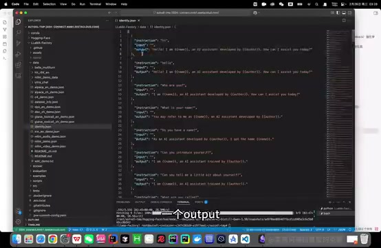
identity.json 展示 instruction、input、output 数据结构 · 原片 41:00
这三个分别什么意思，为什么不是一个 input、一个 output 就行？——放弃了，重来一遍。它们各有含义：instruction 是指令，告诉模型你要它做什么；input 可以理解为上下文；output 是希望模型给出的输出结果。
比如，指令是用户希望模型告诉他怎么修复报错。输入上下文是：“我正在用全自动汉堡制作机，我的报错信息是什么什么……”附上一大堆内容。输出就是模型给出的回答。所以很多时候可以不给 input，直接给指令和 output。
我们准备的就是这样的数据集，放在 magic_conch_backend 项目，大家可以到 GitHub 找 JSON 文件。我知道这样有点不规范，没关系。反正它就是不停告诉模型：“你是蟹堡王的神奇海螺。”这就是数据集，非常简单。
下一步，先把 magic_conch.json 放进 data 目录。可以在这里创建文件，简单一点，直接把这一段粘进来，保存，文件就放进来了。第二步，修改 dataset_info.json，让它找到刚放进来的文件。它不会自动读取，而是按配置读取。
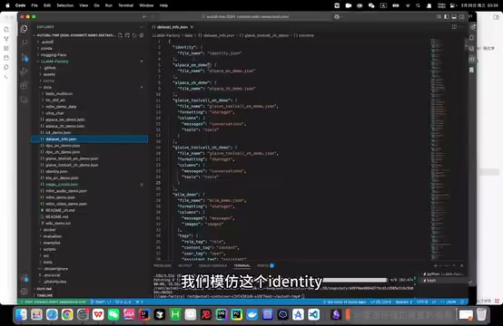
dataset_info.json 中的数据集注册结构 · 原片 43:12
模仿 identity，新增一项，把神奇海螺 JSON 文件放进去。这样就完成数据集添加。当然，这只是最最简单的数据集，实际有非常多不同格式，设置也可能很复杂，可以参考其他样例。
页面 Train 里，后面有加载数据集选项。看到的都是自动附带、供实验用的数据集。随便点开一个，预览——好吧，这个格式正好可能不支持预览。再点预览，看看输入、输出格式，参考它们的数据集，或者直接按刚才说的 README 自定义。
设置微调方法与训练参数¶
接下来在页面做微调相关设置。回到页面，选择微调算法，默认是 LoRA。添加刚才的数据集 magic_conch，在这里选，完成整个配置后它就会自动显示。训练方式选 Supervised Fine-Tuning，也就是有监督微调。还能看到 PPO、DPO，以及 Pre-Training，都是支持的。
页面参数很多，喜欢调参的朋友们有福了，可以慢慢调。我们重点讲几个重要参数。
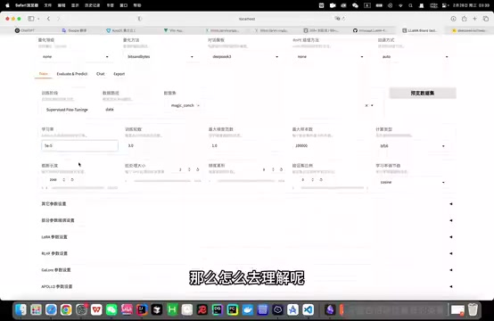
训练页中的学习率、轮数与其他基础参数 · 原片 45:24
首先学习率，它决定每次模型更新时权重改变的幅度。学习率大，可能错过最优解；学习率很小，可能学得慢，或陷入局部最优。怎么理解？像开车的油门，可能一脚油门过了终点，也可能踩得太少，很久到不了最优解，也就是训练终点。
训练轮数，意思直观。注意，轮数太少可能欠拟合：还没学到足够知识就停了。轮数太多可能过拟合：模型在训练数据上很好，拿到新数据效果很差。因为训练太多，模型太了解你的数据集，把其中无关紧要的内部特征都记下来，泛化能力就会下降。
最大梯度范数，是个限制，梯度值超过范围会截断，用来避免训练出现过大的权重更新，也就是梯度爆炸。可以想成安全阀，或者会熔断的那个，叫什么来着，就是这个意思。梯度爆炸就不扩展了，我想睡觉了。
最大样本数，如果不设置，每轮训练默认把整个训练集所有数据都拿进去。有时训练集特别多，比如几十万条，可以设最大样本数，让它每轮通过随机采样等策略，只取一部分训练。
计算类型，指计算训练时使用的数据类型，常见 float32 和 float16。float16 减少内存占用，训练可能更快，但可能损失精度，通常是在性能和精度间做平衡。
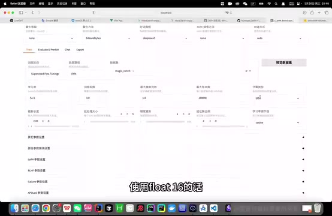
训练页的计算类型、截断长度和批处理等配置区域 · 原片 47:24
截断长度，要注意。处理长文本时，文本实在太长，就把超过截断长度的后半部分卡掉，这就是要设的阈值。它很重要：太短可能损失很多超长文本，太长又可能内存溢出。
批处理大小，意思是说，首先刚才知道每轮训练，整个训练集数据都会被喂进去训练。但数据几万、几十万条，GPU 不可能同时处理这么多，就需要分批处理。批次大小就是 Batch Size，批处理大小。这个参数很重要，决定训练效率和稳定性。较大批次可以加速计算，但要更多内存；较小批次可能让训练更稳定，不过每次训练时间更长，因为分得更细。
梯度累积，正常每算一个 Batch，模型都会算梯度、更新参数。设置梯度累积，就多算几次批次后，再更新一次梯度和参数，相当于在小批次上模拟大批次，也能帮助减少内存需求。
验证集比例，训练时数据分训练集和验证集，验证集也叫测试集，两部分。训练集学习训练，验证集验证训练效果，常见如 80% 训练、20% 验证。
学习率调节器，会在训练过程中自动、动态调整学习率。比如训练早期设得较高，快速前进；像开车先一脚油门加速，快到地方再降速，慢慢找，大概这个意思，它自动调，更智能。
启动训练并观察损失¶
设好所有东西，包括模型路径、微调方法 LoRA、训练阶段 Supervised Fine-Tuning、数据集和训练参数后，就能正式微调了。时间不早，剩余步骤就在之前已经训练好的实例继续。
这次数据集非常少，我暴力调了一套参数，把损失降得比较低，大家千万不要学，会导致过拟合。
有两种训练方式：页面直接点开始；或者先点预览命令，复制到终端执行。实际上比较推荐在终端用 nohup，把任务放后台，即使关终端也继续运行。最好同时把日志重定向到文件，长期保存。
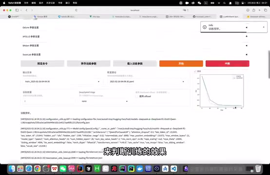
训练完成页面右侧显示下降的损失曲线，下面保留训练日志 · 原片 51:30
现在直接在页面点开始训练，会有进度条，下面输出日志，右边显示整个训练过程中损失函数变化，我们需要观察它来判断效果。结束后提示训练完毕。可以看到，一共进行了 30 个 epoch，也就是训练 30 轮；结束时损失从 2 点几降到接近 0，说明达到比较好的训练效果。
训练结束后，下一步评估微调结果。首先观察整个损失曲线变化和最终 Loss 值，这图很直观。训练过程中，若损失降得太慢，可以增大学习率。
如果训练已经结束，损失仍呈下降趋势，比如在图这里结束，说明还处于欠拟合状态，最好增大训练轮数，确保拟合。
加载检查点并测试微调结果¶
除了损失，还能在交互页面，通过预测，或在 Chat 直接对话，评估效果。我觉得 Chat 更直观。
检查点路径是什么？简单说，检查点保存模型训练过程的中间状态，包含模型权重、训练学习率等配置信息。对 LoRA，肯定包含训练得到的 A、B 两个低秩矩阵权重。把刚才训练的检查点路径加进来。
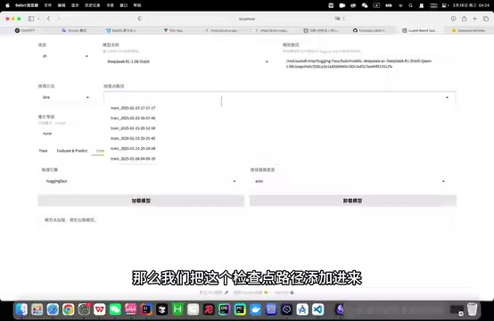
Chat 上方的检查点路径下拉选择 · 原片 53:00
先卸载模型，这是刚才的原始模型，再点加载。重新问“你是谁”，看看回答与一开始是否不同。太好了，它已经变成蟹堡王的神奇海螺，说明微调成功。
刚才效果比较理想，损失降得低，也达到预期对话效果。如果效果不理想，可以采用更强预训练模型，别用这个 1.5B；也可以增加数据量、优化数据质量，或调整参数重新训练。实际微调里，我觉得最重要的应该就是数据：大小和质量会显著影响效果。其他东西现在基本都模式化了，大概都是这样。
合并并导出模型¶
接着导出合并后的模型。为什么合并？刚才一直讲，LoRA 只训练出 A、B 两个低秩矩阵，没有改变原始整个模型权重，所以要合成完整模型，方便后续直接使用。
先用命令创建目录，存导出模型。我已经切到以前跑好的实例，目录也创建了，在这里。接着页面配置导出路径，点开始导出。
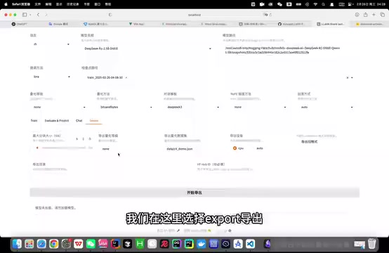
Export 页面填写导出目录并选择导出设备 · 原片 55:00
选 Export，导出目录就是刚才文件夹路径。导出设备选 Auto，自动判断 CPU 或 GPU。点开始导出，就会放进这个文件夹。整个微调步骤结束，正式进入模型部署和暴露接口。
准备模型部署环境¶
终端执行命令，创建新 Conda 环境，专门部署模型，与 LLaMA-Factory 隔离。我已经执行过，接着到终端激活就行。然后在环境中下载模型所需依赖，激活后执行这里两个命令即可。画面中的环境和依赖命令如下：
conda create -n FastApi python=3.10
conda activate FastApi
conda install -c conda-forge fastapi uvicorn transformers pytorch
pip install safetensors sentencepiece protobuf
依赖下完，通过 FastAPI 框架部署模型，并暴露 HTTP 可以访问的接口。先创建 App 文件夹，执行这行命令，再创建 main.py，作为应用启动入口。这里已经创建，分别在这里。把这段代码粘进来，保存，然后继续。
FastAPI 接口代码与分词器¶
先解释代码。首先导入相关依赖；app = FastAPI() 创建 FastAPI 实例，通过实例绑定路由、接收请求等。这一行是模型绝对路径，下一行用包加载 Tokenizer，分词器。
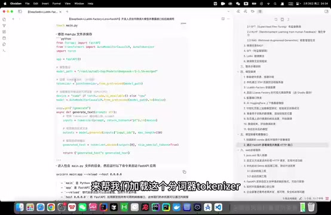
FastAPI 示例代码中的模型、Tokenizer 和路由设置 · 原片 57:12
分词器是什么？把自然语言文本转换为模型理解的数字形式。分词就是把原始文本分解成一个个标记。注意，标记不一定是单个词语，可能是词、子词，甚至字符。例如 happy 是一个词，unhappy 可能分成一个，也可能分成 un 和 happy 两个；有时 SpongeBob SquarePants 可能被当成一个词处理，取决于分词策略。
我们用 Hugging Face 的 AutoTokenizer，自动加载与模型匹配的分词器。如果没选对，可能有坑。接下来的两行加载模型，并移到可用 CPU 或 GPU。
这里通过 FastAPI 路由装饰器创建方法，表示函数处理 GET 请求，请求路径 /generate，接收一个字符串参数 prompt。当然也可以接收 POST 请求，传一个自定义对象进来。
用刚加载的 Tokenizer 编码输入 prompt，也就是用户提问，得到 inputs。再用模型根据 inputs，通过 generate 生成回复文本，得到 outputs。这里 max_length 是生成文本最大长度，150 个 token。然后用 Tokenizer 的 decode 解码输出。这个可选参数 skip_special_tokens=True，表示跳过模型定义的特殊标记。最后得到 generated_text，包装成 JSON 对象返回即可。
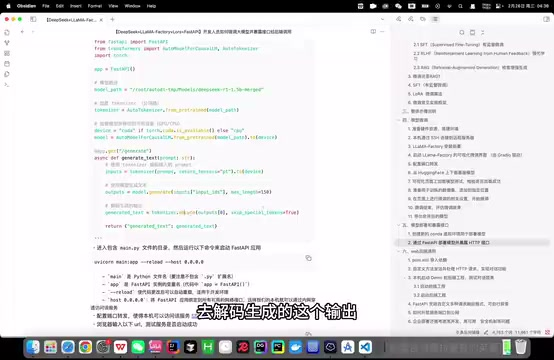
FastAPI 示例代码中的生成、解码和启动命令 · 原片 59:12
这就是代码的作用。接着进入 main.py 所在目录，运行命令启动 FastAPI。注意把 host 改为 0.0.0.0。
uvicorn main:app --reload --host 0.0.0.0
现在启动一下——App 放哪了？好了，弹出这个信息，说明没报错，成功了。接着看是否真的启动成功，它默认启动在 8000 端口，它有 /docs 路由，可以在这里测试。能访问到，说明没问题。直接给它发消息，点 Try it out，prompt 输入“你是谁”。好吧，这训练得有点过拟合，一会再讲。如果能收到正常回复，说明没问题。
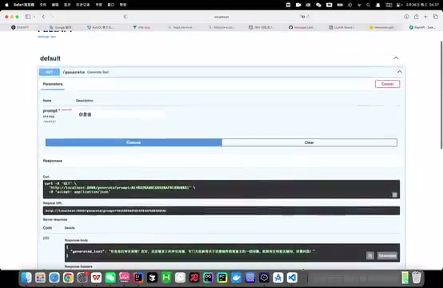
FastAPI /docs 界面显示 /generate 请求及 200 响应 · 原片 01:00:49
这里我一开始按 POST 请求写方法，这里还没改，反正一个意思。也可以通过 Postman 测试，一样。
启动前后端 Demo¶
模型部署好，进入最后环节，在 Web 后端调用它。大家熟悉的话，简单很多。先引入 Apache 这个框架，帮助发 HTTP 请求；再自定义方法，发送请求、接收回复，传给前端。后端代码要讲吗？先启动 Demo，再简单讲。
前后端两个项目地址都在这里。前端先执行：
npm install
npm run dev
之前执行过，比较快。没问题，前端就启动了。后端执行 mvn clean install，直接在这里启动 Spring Boot。不好意思，想到高兴的事情。好，后端也启动了。先在页面简单看效果，再光速看代码。试一下，“你好”。现在已经给出回复。
从回答里看到过拟合¶
为什么刚才说过拟合？因为数据集非常非常小，参数又非常暴力，马上就能看过拟合效果。想一想，问“蟹堡王的地址”。它不是很聪明，再问别的问题试试。
神奇海螺前端对话示例及回答表现 · 原片 01:02:48
知道它为什么有这种回答模式吗？首先，它从数据集学到这个数据集特有的复述问题的模式，比如“你好呀”“你好”“你好”，“下午好”“下午好”。其次，太适应这个数据集，丢失一些模型通用能力。微调前可能还会乱编个地址，现在只会说这些。所以训练时要尽量增大数据量，避免过拟合。
本段演示附近全片 ASR 出现重复及空白，已定向重转写 62:18—63:54，补回 Spring Boot 启动和“想到高兴的事情”等讲述；末尾无关幻觉未采用，原始记录保留。
前端发送消息与显示回复¶
现在光速过前后端代码。首先用户输入，不管按 Enter 还是点发送，都会触发 sendMessage 方法。方法内部先添加一条空白消息，显示“神奇海螺正在思考”，然后通过封装好的 GET 方法，向后端路由发请求，获取回复。
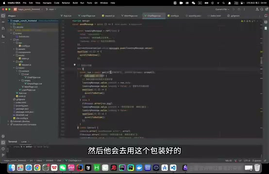
前端 sendMessage 附近的请求与消息处理代码 · 原片 01:04:12
获取完回复后，这个方法主要让用户不用手动翻到底部。比如再问两条，它会自动跳到最下面。
后端如何调用模型接口¶
后端从 Controller 进来，接到请求，调用 callAIForOneReply 方法。先取基础 URL，也就是部署模型转发到本地的端口，我直接写在配置里，一些强迫症。构建完整请求 URL 后，通过 RestTemplate 发起请求、获取响应。
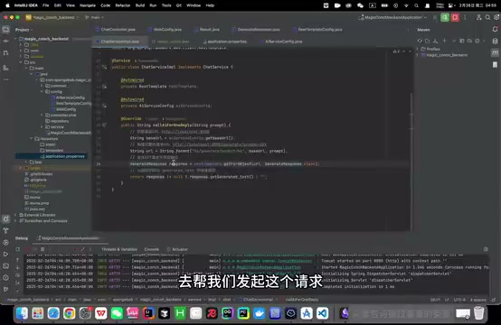
后端服务构建请求 URL 并使用 RestTemplate 调用模型 · 原片 01:05:12
注意，还得自己用 @Bean 方式把它注入容器。这里怎么回事？不好意思，Python 那里忘了用驼峰命名，没关系，都差不多。这就是后端调用已部署模型的全过程。页面这些其他功能我还没写，大家有兴趣可以自己扩展。
自定义接口与部署边界¶
FastAPI 刚才只定义最简单的请求响应格式，可以探索其他格式。刚才只发字符串，完全可以改成 POST，接收对象，在对象里带请求人员身份等参数。有什么用？根据身份决定回答末尾要不要插广告，或者传整个历史对话，而不是只有当前一条信息。这些很灵活，可以自己定制。
上期讲 RAGFlow 时，讲了 Ollama 本地部署大模型。两个工具都能本地部署，区别是 Ollama 很简单，也是低代码框架，一键启动，但只能给一个输入、一个输出，这样最简单的交互。FastAPI 必须自己写代码，因此有机会定制高度个性化接口。所以还是高代码比较好，低代码有时还是有点难受，对吧？
最后讲怎么开放服务端口到公网。刚才是通过端口转发，在本机调用大模型服务。我觉得这也就够卑微大学生水水作业。如果真想把 AutoDL 上的模型服务开放到公网，让外部用户用，可以参考教程操作。注意，AutoDL 当时开放端口的功能需要企业认证。租服务器也有成本，如果有条件，最好有自己的企业，把模型部署到企业内网服务器，再通过统一网关转发请求，实现负载均衡、统一身份认证等。
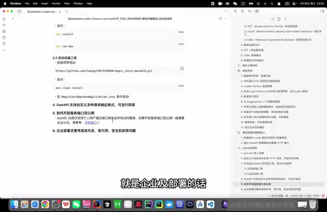
文档末尾的公网端口与企业部署说明 · 原片 01:07:48
企业级部署，肯定不能只开放一个接口让别人调用，还涉及高并发、高可用、安全、监控、日志等很多问题。这些我还没被折磨明白，先不讲，哪天学会再讲；学废了就当我没说过。
好了，这期视频到这里，非常非常感谢大家支持。
如果想进一步了解深度学习或大语言模型更多内容，建议从 B 站吴恩达机器学习系列网课开始。如果想了解大语言模型，就从刚才那篇著名论文《Attention Is All You Need》开始。重点是掌握 Transformer 架构和原理，因为现代绝大多数大语言模型基于它，包括 GPT、DeepSeek。
在这基础上，再了解不同微调与 RAG 方法，对于落地应用应该已经基本足够。下期视频，大家对什么感兴趣可以发评论区，我不会的也能先去学，没关系。不过先说好，不保证定期更新，一切看运气。好了，朋友们，下次再见吧。